The Lemniscate

Some Background
The Lemniscate 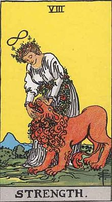 is commonly known as the infinity symbol, representing eternity and balance. It's direct origins are unknown; our earliest records date back to ancient Egypt and the Tibetan ouroboros. The western use of the Lemniscate had existed mostly in religious paintings, usually on a Latin Cross. But it's mathematical meaning comes from John Wallis, a 17th century mathematician, who used it to represent variables that grow arbitrarily large. It came up again in the 17th century when Jakob Bernoulli made a mathematically defined graph of the lemniscate by inverse transforming a hyperbola. Now, we still retain the spiritual interpretation of the infinity symbol: on tattos on the wrists of 22-year-old white women and tarot card characters. But I want to get into the mathematical meaning of the Lemniscate, and I want to make it more intuitive. After this, I think that understanding the math behind this symbol, will introduce a greater appreciation for its meaning.
The Math: a Polar Look
Not wanting to scare anybody off who isn't confident with their math skills, I chose to explain the polar definition of the lemniscate first. Although it requires more
knowledge, the polar equation is much less cluttered than the rectangular definition, and, I think, is more intuitive. If you don't know what
polar expressions are, they're basically equations graphed on a different coordinate grid, which uses radius (r) and angle (theta or θ) rather than a horizontal (x) and vertical (y) axis.
So you can imagine "wrapping" the x-axis of a grid around the origin, taking the angles from the original horizontal x-axis to points on the new circular axis. Then, you can pivot the y-axis
around the origin to have a sort of "output" at different angles. I would suggest looking at this video for a better explanation.
Now, in academia, you will be given this formula, 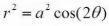 for the definition of a lemniscate and be told to memorize it. But I will try to make it more intuitive,
simply by re-expressing it, and using a little bit of trigonometric reasoning and visualization.
If we just take the square root of both sides, we get:
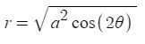
Then we can take the square root of that pesky constant a2 to get:
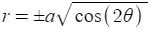
So what about that cos(2θ)? That doesn't really seem intuitive. But we can re-express it as something else to help with understanding what this means. We know from our basic trig classes that
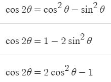
Picking one of those, we can use substitution to get a better looking function:
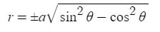
This is the heart of the function. The actual part of our expression that causes the graph to actually change. Why does this help us understand the lemniscate? Just look at the graphs of cos2θ and sin2θ
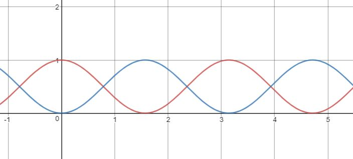
Looking at the graph, we can see that cos2θ increases as sin2θ decreases
and vice versa. They intersect at a point in which θ = π/4, 3π/4 in the interval [0, 2π], making their differences zero. Looking at these graphs, you can consider
these forces as repulsive, always going in a different direction from each other. It's apparent that these graphs can be interpreted as having a push-pull dynamic that keep
both cos2θ and sin2θ in equilibrium.
So imagine these two identities as forces, acting on each ends of a bungie cord, the center of which is at a fixed point. The farther they get from each other, the more they tug in opposite directions of each
other. At the very end of the graph, the pull from the tension on the bungie cord becomes too great, and the two forces start sliding to each other, meet at the center, and then repeat their tug
in the opposite direction. Basically combine the two below.
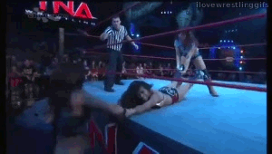 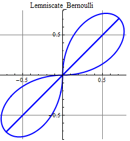
As for the sqaure root, that just limits the graph to two pedals, instead of two, and makes the intersection of the graph smoother. Here we can see 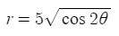 (Blue) and 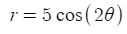 (Red) compared with each other
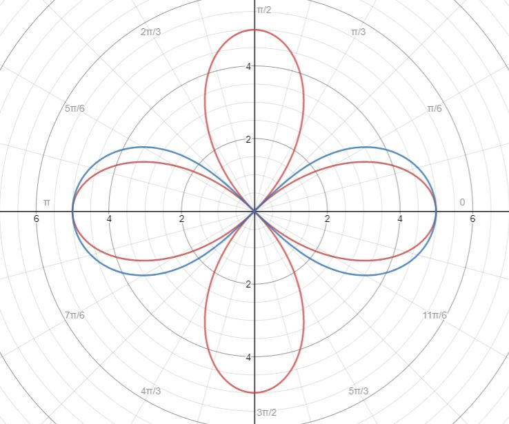
The Math: an Implicit Look
When I'm talking about the lemniscate, I mean the lemniscate of Bernoulli. The Lemniscate, in this situation,
would be created implicitly, the same way we make circles and hyperbolas are constructed. Implicit functions are usually constructed through using some defined constant, and
finding all possible values of the variables that satisfy this constant. This is like a shotgun blast of an equation, seeing where our expression equals the constant and where it
does not. If you wanna see more look at this video for a detailed explanation on implicit functions. Now, lets continue on a rectangular (x and y) expression
of the lemniscate.
Ryan Byrd's Fun with Lemniscates is the basis of this lesson, I
would recommend seeing his webpage. So, lets say we have two circles. As we know, circles are implicit functions, because an expression of x and y is set to some constant,
which is the square of its radius: (x - k)2 + (y - h)2 = r2. The k and h are simply just shifts in the x and y direction:
shifting the circle k units right and h units up. Lets look at two arbitrary circles of equal radius below.
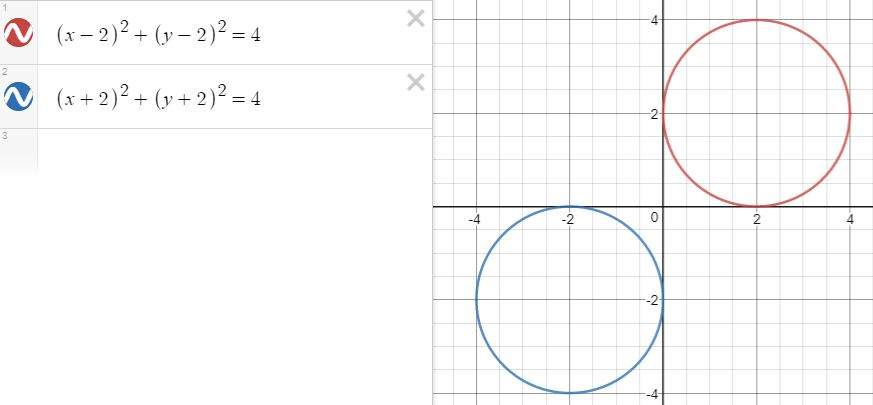
If we just "squish" these two together, it's visible that we can get a lemniscate. Just eyeing the graph, we can see that there are two possible additive operations we can use to smush the two circles together: addition and multiplication. This is just my caveman logic, but lets go through with it anyways. Wanting to save time, I will tell you right now that Byrd did a lot of the work for me, and he finds that adding the square root of the circles and setting them to some constant will just yield an oval. At some values the oval will not even show up, meaning that there are no real values to the variables that satisfy the "condition" or value the expression is set equal to. As we can see, for these circles, any integer value equal to or below 6 will be null.
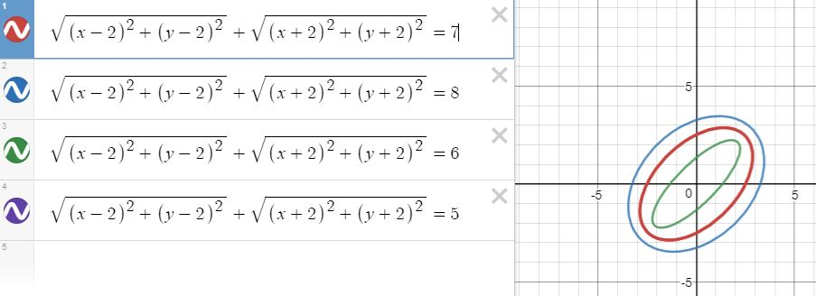
This is the first time I have ever been disappointed by an oval. But I have one more operation to try: multiplication. If we take the square root expression of the circles, multiply them together, and experiment with different values, we'll see a pattern.
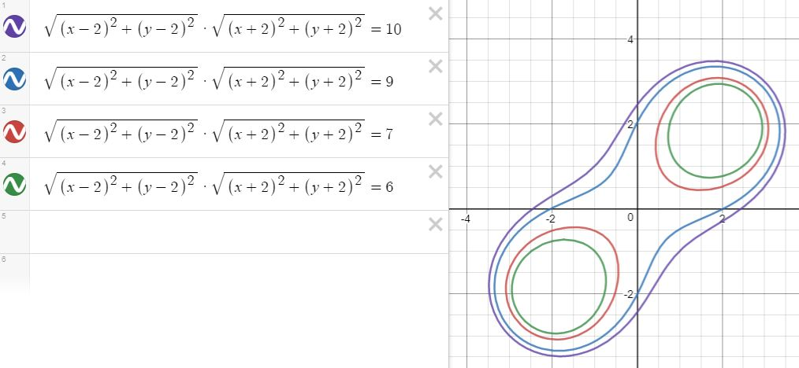
It seems that the shape of the lemniscate formed between the values of 9 and 7. I'll start to look in between those two values.
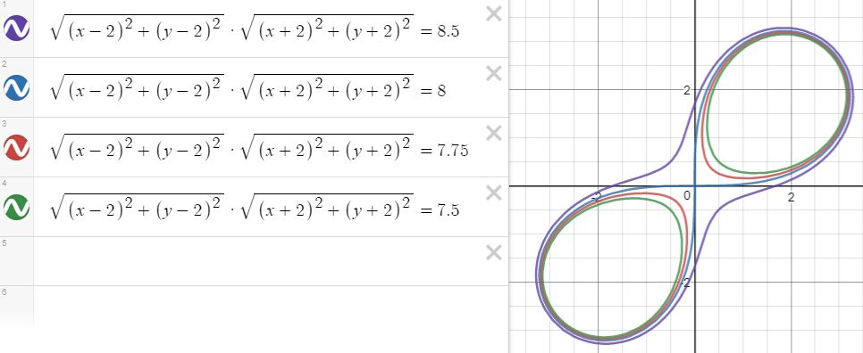
The constant value of 8 will give us our pure lemniscate shape. Now it's time to boil this down to a general expression. If you look at centers of the original circles, and found their distances from the midpoint, or the origin, you would get
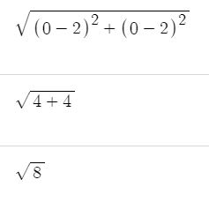
This would be equivalent for the center of the other circle, since we're examining the distance from the midpoint. This would be logical, since √8 * √8 = 8, allowing the graph to intersect at the origin. So we'll call our distances or "radii" a and our expression equal to a2. The horizontal lemniscate can be simply expressed as 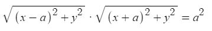. Which can be re-expressed as 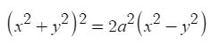, giving us Bernoulli's formal definition of a horizontal lemniscate. This is actually the equation used to make the polar expression of the lemniscate
Notable Mentions
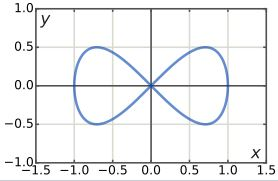There are many other ways to create a lemniscate. Each of them having a beautiful geometric proof or a different shape
from Bernoulli's definition.
The Lemniscate of Gerono is expressed as the zero set of 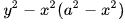, looking like this bow tie shape. It can also be created by Vivani's curve,
which is the intersection of a sphere by a cylinder, in which the surfaces of the two shapes have a tangent point. We take the intersection shape of the cylinder and sphere and
project it on a 2D plane, yielding Gerono's lemniscate.
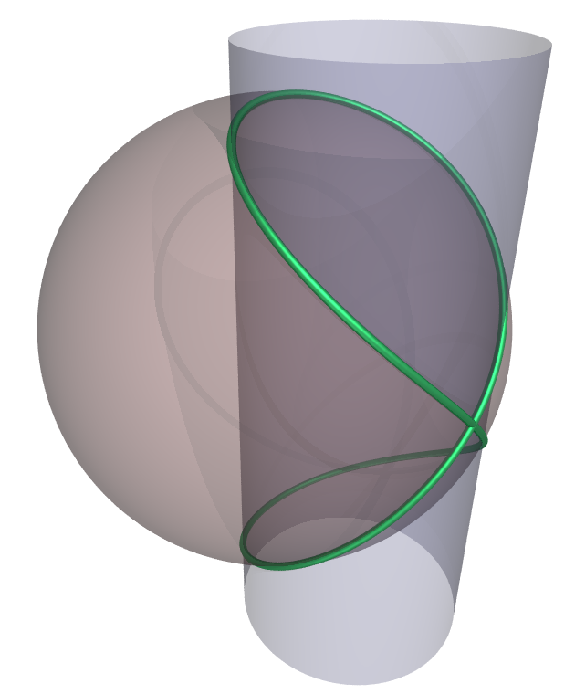
Another way to create the Lemniscate of Bernoulli is through an inverse transformation of a hyperbola. This requires some knowledge in inversive geometry: in other words, I can't help you here. But hey, look at this neat little gif.
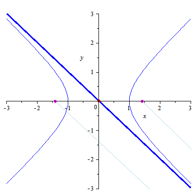
Watt's curve is given as 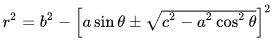 and yields some of the following constructions
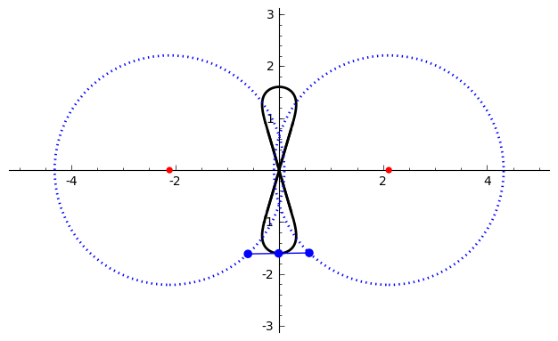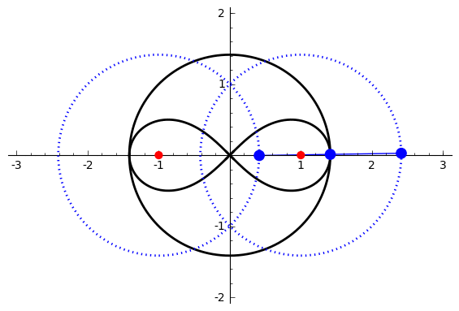
Why the Lemniscate
I first heard about the lemniscate from a work of Simeon ten Holt's called "Lemniscaat", meaning lemniscate in Dutch. I've never cried from a song before, but this one brought me pretty close. After finding the meaning of the title, I became pretty fascinated with the lemniscate and other polar graphs, just because of all the strange shapes you could get by changing a formula minimally. I had an idea of making minimalist backgrounds out of them, just because their sleek, modern look. I also had the idea of making a website at the same time, so I smushed them together to make whatever this is. Hope you appreciate it though!